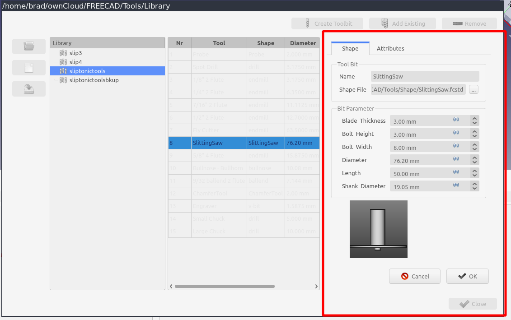

CAM Gestionnaire des outils coupants
| This page is incomplete; it was marked as unfinished on the wiki. |
 CAM Gestionnaire des outils coupants
CAM Gestionnaire des outils coupants
- Menu location
-
- Workbenches
- Default shortcut
-
None
- Introduced in version
-
0.19
- See also
-
CAM Sélecteur d’outils coupants, CAM Outils, CAM Outil coupant
Description
Le  Gestionnaire des outils coupants est la commande de création, de gestion et d’organisation des outils coupants. Le lancement du gestionnaire de bibliothèque affiche le gestionnaire dans une boîte de dialogue modale.
Gestionnaire des outils coupants est la commande de création, de gestion et d’organisation des outils coupants. Le lancement du gestionnaire de bibliothèque affiche le gestionnaire dans une boîte de dialogue modale.
A partir de là, l’utilisateur peut effectuer toutes les tâches liées à la gestion des outils coupants :
-
Sélection d’une bibliothèque par défaut.
-
Créer/modifier/supprimer des outils coupants.
-
Créer des bibliothèques.
-
Modifier les bibliothèques en ajoutant et en supprimant des outils coupants.
-
Sauvegarder une bibliothèque sous un nouveau nom.
-
Exporter une bibliothèque au format de table d’outils LinuxCNC (.tbl).
La création de nouvelles formes d’outils n’est pas possible à partir du gestionnaire de la bibliothèque d’outils. Il s’agit d’un sujet avancé. (voir CAM Forme d’outil)

Le gestionnaire des outils coupants
Le volet à gauche (1) affiche une liste de toutes les bibliothèques du répertoire de travail en cours. La bibliothèque en cours est mise en évidence.
Le chemin du répertoire de travail en cours est affiché dans la barre de titre de la fenêtre (2). Un sélecteur de fichiers (3) peut être utilisé pour sélectionner un autre répertoire de travail.
Le volet de droite (4) montre tous les outils coupants de la bibliothèque sélectionnée. En double-cliquant dans la colonne de gauche, vous pouvez modifier le numéro de l’outil par défaut pour cet outil coupant. Le numéro de l’outil sera utilisé lors de la création d’un contrôleur d’outils. Le numéro est un attribut de la bibliothèque. Cela signifie que le même outil coupant peut exister dans plusieurs bibliothèques d’outils et avoir des numéros d’outils par défaut différents dans chacune d’elles.
Les outils situés en haut (5) sont utilisés pour créer/additionner/supprimer des outils coupants de la bibliothèque en cours.
Le bouton Enregistrer sous (6) permet d’écrire la bibliothèque dans un nouveau fichier ou de l’exporter vers un format de table d’outils valide. Actuellement, seul le format LinuxCNC est supporté.
Le gestionnaire se souviendra de la dernière bibliothèque d’outils active et du dernier répertoire de travail entre deux utilisations.
Le bouton de fermeture (7) en bas à droite permet de quitter le gestionnaire de bibliothèque d’outils. Toutes les modifications apportées à la bibliothèque en cours sont conservées sur le disque. Si vous appuyez sur la touche Echap, le gestionnaire est désactivé mais aucune modification n’est apportée à la bibliothèque en cours. La bibliothèque sélectionnée lors de la fermeture du gestionnaire deviendra la nouvelle bibliothèque par défaut et sera affichée dans la fenêtre des outils coupants.
Utilisation
-
Il existe plusieurs façons d’ouvrir le gestionnaire de bibliothèque des outils coupants :
-
Sélectionnez l’option du menu.
-
Ouvrez le sélecteur des outils coupants comme décrit ci-dessus et appuyez sur le bouton Éditeur de la bibliothèque….
-
-
Sélectionnez une bibliothèque dans la liste.
-
Créez/Ajoutez/Supprimez des outils coupants de la bibliothèque.
-
Double-cliquez sur une ligne pour éditer un outil coupant.
-
Fermez le gestionnaire.
-
La bibliothèque sélectionnée devient la bibliothèque par défaut du sélecteur.
Modification des outils coupants
Il existe plusieurs façons d’éditer les outils coupants et la bibliothèque :
-
En cliquant sur les en-têtes de colonne de la bibliothèque, vous pouvez trier la bibliothèque des outils coupants. La bibliothèque conservera le tri et l’utilisera dans le dock.
::

Tri de la bibliothèque des outils coupants via les en-têtes de colonne
-
En double-cliquant dans la première colonne, vous pouvez modifier le numéro de l’outil coupant. Ce sera le numéro d’outil par défaut utilisé lors de la création d’un nouveau contrôleur d’outils. Il est possible d’utiliser le même numéro pour plusieurs outils coupants.
::

Double-cliquez sur la première colonne pour modifier le numéro de l’outil coupant .
-
Double-cliquez n’importe où ailleurs dans la ligne pour ouvrir le panneau d’édition de l’outil coupant. A partir de là, vous pouvez modifier d’autres propriétés de l’outil coupant.
::

Ouverture du panneau d’édition de l’outil coupant en cliquant n’importe où ailleurs dans la rangée.